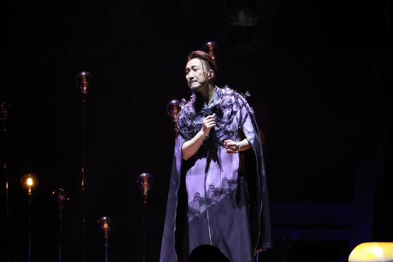

港星郑中基近日宣布完成手头工作之后将无限期停工，稍早亲自发声，坦承再度染上酒瘾，对家人相当愧疚，接下来会用时间以及行动证明，自己会努力做好丈夫、爸爸、郑中基的这个决心。
他说自己的家庭生活美满，在萤光幕前看似侃侃而谈，且已走过低潮，但其实一旦面对压力、面对工作、面对人的时候，「原来我自己的问题没有彻底解决，好多事我都未能做到好好去沟通，好多事我都没处理好，令家人失望」。
他这些年也就医求助，靠服药治疗抑郁症，无奈这回又靠酒精逃避现实，老婆余思敏看在眼中很是不舍，不断劝告他，让他相当自责并积极反省。他说现在必须认清工作忙碌并非借口，并要学会沟通，所以接下来完成既定工作之后，会在老婆陪同下飞往美国参加戒酒中心的疗程，「都50几岁了，我要去想清楚怎样去面对自己，然后才可以面对大家，我希望回来之后可以做一个更好的自己」。
许多粉丝纷纷留言替他打气，至于他指责经纪人的部分因为只字未提，让网友相当关心究竟发生什么事。